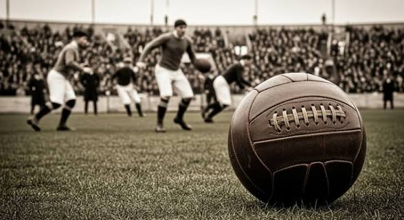
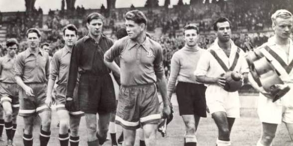
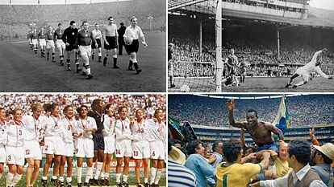

Info sobre el futbol
Foto antigua

El fútbol moderno nació en Inglaterra en 1863, cuando la Football Association (FA) unificó las reglas del deporte, separándolo oficialmente del rugby. Sin embargo, sus raíces se remontan a juegos antiguos practicados con pelotas de cuero o de caucho en China (Cuju), Egipto y Mesoamérica.
historia del futbol

China (Siglo III a.C.): Se practicaba el Cuju, un ejercicio militar que consistía en patear una pelota de cuero rellena hacia una pequeña red. Es reconocido por la FIFA como uno de los primeros antecedentes.
Fotos donde sale uno de los los mejores
